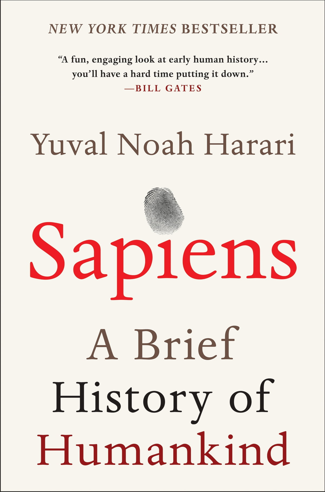

"Como ganar amigos e influir sobre las personas" es un libro escrito por Dale Carnegie que ofrece consejos prácticos sobre cómo establecer relaciones efectivas y mejorar las habilidades sociales. El libro se divide en varias secciones que abordan diferentes aspectos de la interacción humana. En resumen, el libro destaca la importancia de mostrar interés genuino en los demás, escuchar atentamente, elogiar de manera sincera y evitar las críticas. Carnegie enfatiza que es esencial tratar a las personas con respeto y consideración, evitando la confrontación y buscando soluciones mutuamente beneficiosas. Además, el autor enfoca la importancia de recordar los nombres de las personas, ya que esto demuestra interés y ayuda a establecer una conexión más fuerte. También se discuten técnicas para manejar las críticas y las quejas de manera constructiva, así como la importancia de admitir los propios errores y disculparse cuando sea necesario. En general, el libro aboga por un enfoque empático y comprensivo hacia los demás, promoviendo una comunicación efectiva y el establecimiento de relaciones sólidas. Su objetivo es ayudar a los lectores a mejorar sus habilidades sociales y convertirse en individuos más exitosos en sus relaciones personales y profesionales.
"Ikigai" es un libro que explora el concepto japonés de encontrar un propósito significativo en la vida. Escrito por Héctor García y Francesc Miralles, el libro aborda cómo descubrir y cultivar el "ikigai", que se refiere a la razón de ser y la pasión que nos impulsa cada día. El libro se basa en la idea de que encontrar nuestro "ikigai" nos brinda satisfacción y felicidad duradera. A través de historias inspiradoras y ejemplos prácticos, los autores presentan una guía para identificar nuestros intereses, talentos, valores y contribuciones al mundo. El "ikigai" se encuentra en la intersección de cuatro elementos: lo que amamos hacer, lo que se necesita en el mundo, lo que podemos ser pagados por hacer y lo que somos buenos haciendo. Al encontrar este equilibrio, podemos descubrir nuestra pasión y propósito en la vida. El libro también explora prácticas como la búsqueda del equilibrio, el cuidado de la salud física y mental, la conexión con los demás y la adopción de una mentalidad positiva. Estas prácticas se presentan como herramientas para cultivar y nutrir nuestro "ikigai" a lo largo del tiempo. En resumen, "Ikigai" es una obra que invita a reflexionar sobre nuestra existencia y a descubrir lo que nos impulsa y nos llena de alegría. Ofrece consejos prácticos y ejercicios para ayudarnos a encontrar y vivir una vida significativa y satisfactoria.
"Pura pasión" es una obra autobiográfica escrita por Annie Ernaux, una reconocida autora francesa. El libro relata la historia de la pasión apasionada y breve que vivió la autora durante su juventud en la década de 1950 en una pequeña ciudad de Normandía. La narrativa se centra en el encuentro de Annie con un hombre casado llamado A. En medio de una sociedad conservadora y moralista, la autora experimenta una intensa relación amorosa marcada por la clandestinidad y la prohibición. El libro explora los pensamientos y sentimientos de la autora durante este período, así como las consecuencias emocionales y personales que tuvo en su vida. "Pura pasión" aborda temas como el deseo, la sexualidad, la represión social y las restricciones impuestas por la sociedad de la época. La escritura de Ernaux es íntima y evocativa, brindando una visión profunda de sus emociones y reflexiones mientras explora su propia identidad y las complejidades del amor y la pasión. En resumen, "Pura pasión" es una obra autobiográfica que relata una relación amorosa prohibida vivida por la autora en su juventud. A través de su prosa emotiva y reflexiva, Ernaux nos invita a explorar temas de deseo, represión y la influencia de las normas sociales en nuestras vidas 
"Sapiens: De animales a dioses" es un libro escrito por Yuval Noah Harari que ofrece una perspectiva fascinante sobre la historia de la humanidad. El autor aborda los principales hitos y desarrollos de nuestra especie, desde la evolución de los primeros seres humanos hasta los avances tecnológicos y culturales que nos han llevado al presente. El libro examina cómo los seres humanos evolucionaron y se distinguieron de otras especies, explorando temas como la revolución cognitiva, la aparición de la agricultura y la formación de sociedades complejas. Harari también analiza cómo las estructuras sociales, las creencias religiosas y los sistemas políticos han moldeado el curso de la historia. Además, "Sapiens" examina el impacto de la revolución científica y la revolución industrial en la sociedad humana, así como los desafíos éticos y existenciales que enfrentamos en la era moderna, como el cambio climático y la bioingeniería. En resumen, "Sapiens" es un libro que narra la historia de la humanidad desde sus orígenes hasta el presente, abordando temas clave como la evolución, la cultura, la religión y el progreso tecnológico. A través de una narrativa accesible y perspicaz, Harari ofrece una visión panorámica de nuestra especie y desafía a los lectores a reflexionar sobre el pasado y el futuro de la humanidad..
García Márquez. La historia sigue a la familia Buendía a lo largo de varias generaciones en el ficticio pueblo de Macondo. El libro narra la vida de los miembros de la familia Buendía, desde el patriarca, José Arcadio Buendía, hasta su última generación. La novela combina elementos de realismo mágico con una rica historia familiar, explorando temas como el amor, la soledad, la guerra, la política y el destino. A lo largo de la historia, la familia Buendía experimenta una serie de eventos extraordinarios y misteriosos, como la aparición de personajes con habilidades sobrenaturales, la fundación de la ciudad de Macondo, las guerras y las relaciones complicadas entre sus miembros. La novela también aborda temas más amplios, como la corrupción, la violencia, la búsqueda de la felicidad y la condena a repetir los errores del pasado. A medida que avanza la historia, se revela un ciclo repetitivo de tragedias y tragedias en la vida de la familia Buendía, que ilustra el sentido de soledad y aislamiento en la condición humana. En resumen, "100 años de soledad" es una novela épica que cuenta la historia de la familia Buendía a través de varias generaciones, mezclando lo real con lo fantástico. Es una obra maestra literaria que explora temas universales mientras teje una trama fascinante llena de personajes memorables y eventos inolvidables.